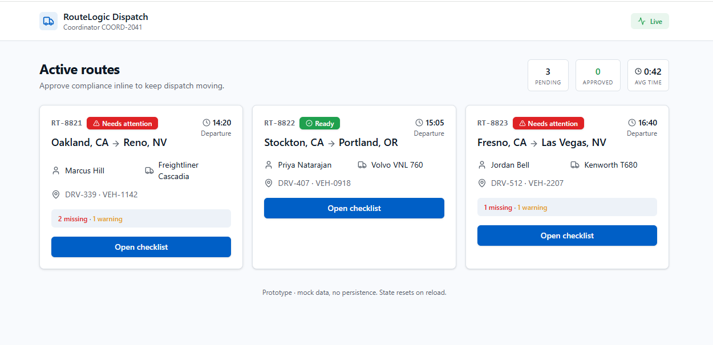
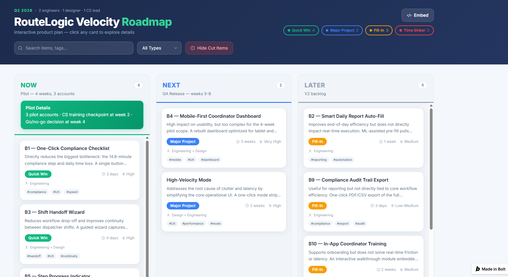

Restore frontline execution trust. Protect enterprise retention.
Fix execution trust before funding more frontline capability.
Simplify the execution layer while preserving enterprise depth in the background.
Faster decisions
Fewer steps
One operational system
One-Click Compliance Checklist
Pre-fill known data · surface exceptions · approve only when valid
AI ETA
Fleet analytics expansion
Broader training / reporting


Compliance · alerts · progress · handoff
High-Velocity Mode · mobile-first dashboard
Reporting · export · training
| Decision | Rule |
|---|---|
| SHIP | Completion ≥63%, p<0.05, GPS ≥95%, sync errors ≤2% |
| ITERATE | Positive direction, below +15pp MDE |
| INVESTIGATE | Primary improves but guardrail or segment breaks |
| KILL | No improvement or negative movement |
Existing enterprise accounts at renewal risk
Customer Success · Sales · In-app · Email
Pilot proof before broad rollout
Use before / after workflow evidence in renewal conversations.
Scale Velocity into the broader frontline experience.
Iterate the workflow. Protect guardrails.
Kill the bet. Redirect engineering capacity.